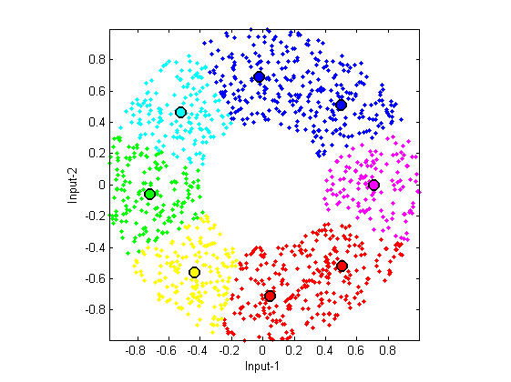

kMeansClustering_b
VQ (vector quantization) of K-means clustering using Forgy's batch-mode method
Contents
Syntax
- center = kMeansClustering(data, clusterNum)
- [center, assignment, distortion, allCenter] = kMeansClustering(data, clusterNum, plotOpt)
Description
center = kMeansClustering(data, clusterNum, plotOpt) returns the centers after k-means clustering, where
- data (dim x dataNum): data set to be clustered; where each column is a sample data
- clusterNum: number of clusters (greater than one), or matrix of columns of centers
- plotOpt: 1 for animation if the dimension is 2
- center (dim x clusterNum): final cluster centers, where each column is a center
[center, assignment, distortion, allCenter] = kMeansClustering(data, clusterNum, plotOpt) also returns assignment and distortion, where
- assignment: final assignment matrix, with assignment(i,j)=1 if data instance i belongs to cluster j
- distortion: values of the objective function during iterations
Example
DS=dcData(2); centerNum=8; plotOpt=1; [center, assignment, distortion] = kMeansClustering(DS.input, centerNum, plotOpt);
Iteration count = 1/200, distortion = 137.308633 Iteration count = 2/200, distortion = 67.700265 Iteration count = 3/200, distortion = 64.882096 Iteration count = 4/200, distortion = 64.427597 Iteration count = 5/200, distortion = 64.346599 Iteration count = 6/200, distortion = 64.303846 Iteration count = 7/200, distortion = 64.266626 Iteration count = 8/200, distortion = 64.251133 Iteration count = 9/200, distortion = 64.243952 Iteration count = 10/200, distortion = 64.218489 Iteration count = 11/200, distortion = 64.180515 Iteration count = 12/200, distortion = 64.169385 Iteration count = 13/200, distortion = 64.162427 Iteration count = 14/200, distortion = 64.162427